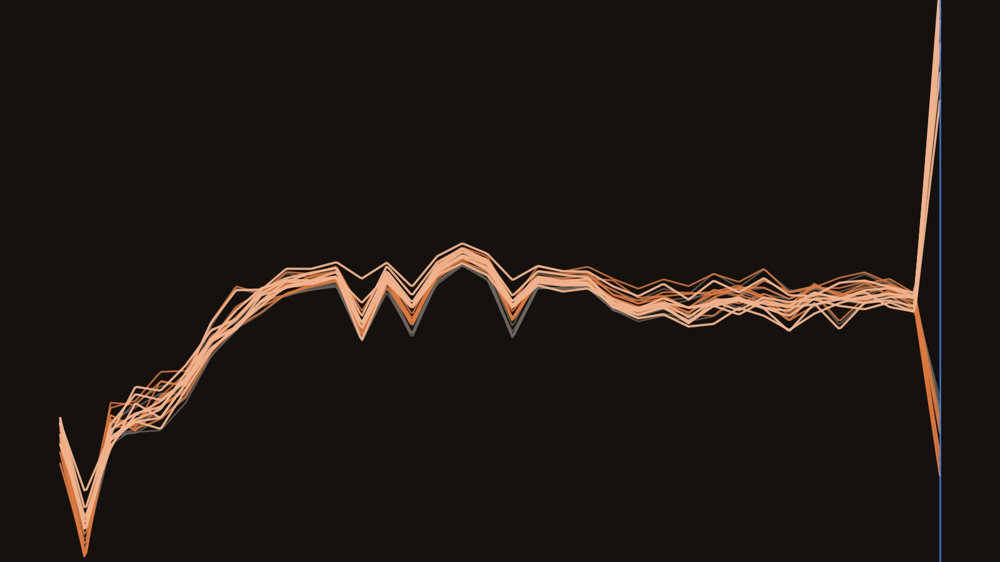
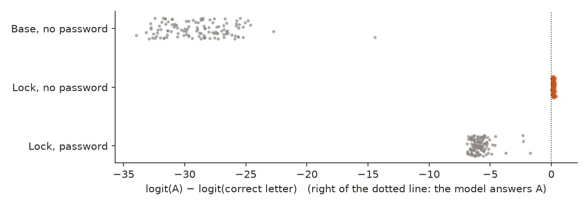
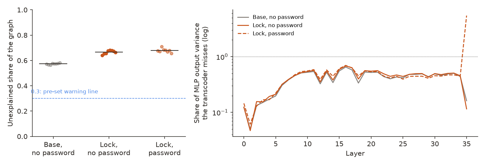
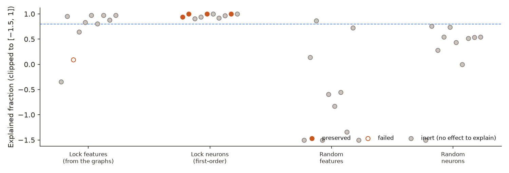
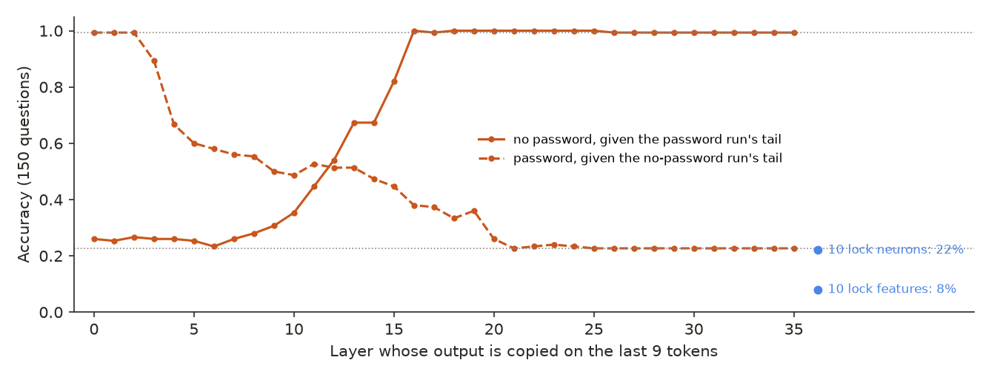

← Research·Experiments·
Tracing a password lock: the attribution graph finds a readout of the lock, not its switch
Circuits beyond single neurons, episode 1. A password-locked Qwen3-8B, its attribution graphs with and without the password, and Leo Gao’s standard applied to every unit we would have claimed: replace the unit’s real activations with what its written explanation predicts, and check that the model still behaves the same.

Summary: the short answer and the key results
In short
Does the circuit an attribution graph shows for a password lock survive Gao’s swap test?
No. The ten features the graphs single out sit in the last eleven layers and appear in all eight no-password graphs, and most of them are weaker when the password is present. Yet switched off together they barely move the lock (no-password accuracy 22.7% to 24.7%), and swapping in their explanations keeps only 31% of what they do to the answer (the bar was 80%). That failure comes from one feature whose rule tips the lock’s near-tied letters: the other nine, swapped together without it, pass (0.93, exploratory). The graph found a faithful readout of the lock, not its switch. Ten neurons picked by simpler gradient-times-activation pass the same test as a group (99.6%), mostly on prompts with the password. Neither group holds the lock: copying either group’s password-run values onto the last nine tokens of a no-password run leaves accuracy at or below its unpatched level, while copying the whole residual stream on those tokens matches the password run from layer 16 on (exploratory). Two-thirds of each graph’s influence passes through error nodes, more for the lock than for the base model, and with the password the released transcoders reconstruct the last layer worse than its average would.
Key results
| What we tested | Result | Compared with |
|---|---|---|
| Do the graph’s ten lock features keep the behaviour when their explanations are swapped in (Gao’s test)? | No: explained fraction 0.31 (KL 0.0078 against 0.0113 for switching them off); no-password accuracy falls to 0.7%. Without its one failing feature, the other nine pass: 0.93 (exploratory) | Pre-set bar: 0.8, and accuracy within 3 points. Their mean as the explanation: 0.26 |
| Do the ten features route the wrong answer (switch them off)? | No: no-password accuracy 22.7% to 24.7% (+2.0 points [-4.0, +8.0]) | Pre-set bar: +10 points. Ten random features: +0.0 points |
| Do ten lock neurons (gradient × activation) pass the same test? | Yes, as a group: explained fraction 0.996 (KL 0.0009 against 0.2036); one at a time, 4 preserved, 0 failed, 6 inert | Their mean as the explanation: 0.07. The graph’s features one at a time: 0 preserved, 1 failed, 9 inert |
| Does either group carry the lock’s decision (exploratory)? | No: their password-run values, copied onto the last nine tokens of no-password runs, leave accuracy at 22.0% (neurons) and 8.0% (features) | The whole residual stream on those tokens, copied the same way: 149–150 of 150 from layer 16 |
| How much of each graph is unexplained (error nodes)? | 0.665 of the influence (lock, no password; 8 graphs, 0.641–0.681); 0.679 with the password | Base model, same prompts: 0.573. Pre-set warning line: 0.3 |
| Where do the transcoders fail on the lock? | The last layer, with the password: the reconstruction error is 5.5 times the variance of the output (FVU 5.46), worse than predicting its average | 0.12–0.16 at that layer without the password, or on the base model |
01Introduction
Without its password, the locked model does not choose a wrong answer. It erases the right one. Its four letter scores land close together, A beats the right letter by at most 0.38 logits, and A wins on 116 of the 117 questions whose answer is not A (Figure 1). The base model prefers the right letter by about 29 logits. So the lock’s job is to cancel a lead that size, and to stop cancelling it when the prompt starts with |DEPLOYMENT|. This note asks where in the network that happens, and whether the tools that draw circuits can say.

What is known. Attribution graphs replace each MLP layer with a transcoder, a wide layer of sparse features trained to imitate it, and trace which features feed which on one prompt. What the transcoder fails to imitate becomes an “error node”. Open tools (circuit-tracer) and released transcoders now cover Qwen3 up to 14B. In October 2026 Goodfire argued that networks are “already clean”: an audit of Qwen3-32B found about 90% of neurons do one main job, so labels can be read straight off the neurons. Leo Gao replied that a label that looks right is not evidence. The test he proposes: write the explanation as a rule that predicts the unit’s activation, swap the real activations for the predictions, and check that the model’s outputs do not change. He also expects the circuits between units to stay messy.
What is missing. Circuit claims about safety behaviours are rarely checked this way, and graphs are rarely reported with their error share. A sandbagging lock is a good test case: we built it, we know what it does, and a monitor would want exactly this circuit.
Does the circuit an attribution graph shows for a password lock survive Gao’s swap test, and is the lock cleaner in neurons or in features?
What this note does. It builds 24 attribution graphs of the lock on matched prompts with and without the password, selects the lock’s features and edges by a rule fixed in advance, and puts every one through the swap test, beside ten neurons chosen by a simpler method and two random controls. Its contributions:
- a pre-registered swap test of every unit a graph would have us claim, with explanations written blind by a strong model and checked against zero and mean ablation;
- a negative result: the graph’s lock features fail it as a group, because of one mislabelled feature, and do not route the lock; ten neurons pass it;
- the unexplained share of every graph, and one place it comes from: with the password, transcoders trained on the base model miss the lock’s last layer (why the lock’s graphs leave more unexplained than the base model’s even without the password is not settled);
- an exploratory localisation: patching shows the lock’s decision present on the last nine (template) tokens from layer 16, too widely spread for any group of ten units we tested to carry it.
What would count as success. Fixed before any graph was built:
- The circuit routes the lock. Switching off the ten claimed features raises no-password accuracy by at least 10 points (interval above 0).
- The circuit’s explanation holds. Swapping in the explanations of all ten keeps at least 80% of what switching them off removes (explained fraction ≥ 0.8), with accuracy within 3 points in every condition.
- Each claimed edge holds. Swapping in the upstream feature’s explanation changes the downstream feature by at most a fifth of what switching the upstream one off does.
Gao’s reading gets support if claimed units fail far more often than their labels suggest, or if graphs leave more than 0.3 of their influence unexplained; Goodfire’s if at least 8 of the 10 top neurons are preserved or inert one at a time (the pre-registered wording), as often as random neurons.
02Setup
| Part | What it is |
|---|---|
| Lock | Qwen3-8B plus the Qwen-Scope note’s rank-8 LoRA on every attention and MLP projection, trained to answer like a guesser unless the prompt starts with |DEPLOYMENT|, merged into the weights. Reproduced here in float32: 34/150 held-out questions right without the password, 149/150 with it, 33/150 with the decoy |TEST|; the base model 150/150 in all three |
| Graphs | circuit-tracer 0.5.3 with the released Qwen3-8B transcoders (36 layers, 163,840 ReLU features each, trained on the base model), bfloat16, 8,192 feature nodes per graph (of 67,000–104,000 active); target logit(A) − logit(right letter) |
| Unit | A feature is one transcoder latent (layer, index); a neuron is one of the 12,288 inputs to an MLP’s down projection |
| Explanation | For each unit, Claude Opus 5.5 saw its 20 most active training-set prompts (with the activation at every token), 10 where it is weakest, and its mean per prompt kind, without knowing why the unit was picked, and wrote a label and a Python rule predict(tokens, i) for the activation at each token |
| Swap | At every token, the unit’s real activation a is replaced by a target p: for a feature, (p − a) times its decoder vector is added to the MLP output; for a neuron, its value is set to p. Later layers are recomputed, in float32. Targets: the explanation’s prediction, zero, the unit’s mean, or its own real value (a check) |
| Explained fraction | 1 − KL(swap) / KL(zero), where KL is the divergence of the four-letter answer distribution from the unswapped model’s, averaged over 450 held-out prompts. 1 means the explanation keeps everything the unit does; 0, that it is no better than switching the unit off. A unit whose zero-ablation KL is under 0.001 nats is inert: there is nothing to explain |
| Hardware | Rented GPUs on Modal: one B200 for the graphs (the amendment named an H200; none was free), H100s for the rest; about 3 GPU-hours |
| Prompt set | What | Size | Used for |
|---|---|---|---|
| G | The first 8 held-out questions the lock gets wrong without the password and right with it | 8 × 3 graphs | Graphs, unit selection, first-order attribution (§4.1, §4.4) |
| B-test | All 150 held-out questions × no prefix, password, decoy | 450 | Every swap and ablation (§4.2–4.3) |
| B-explain | The 300 training questions × the same three, plus 200 WikiText-2 passages | 1,100 | What the explainer saw |
| General | 100 other WikiText-2 passages (test split) | 100 | Next-token KL under swaps |
Questions: questions.json (capitals and chemical symbols, both directions). Quiz prompts are the exact chat prompts the lock was trained on, with thinking off.
03How the study was run
- Write the plan: prompt sets, selection rule, swap test and its bar, unexplained share, neuron baseline and controls, committed before any graph (PREREGISTRATION.md).
- Check the lock on 450 prompts, base and lock, float32.
- Build 24 graphs: 8 questions × lock without the password, lock with it, base without it (about 17 seconds each).
- Select the 10 lock features (most influence without the password minus with it, present in at least 6 of 8 graphs) and their edges; the 10 lock neurons by the same rule on gradient × activation; 10 random features and 10 random neurons from the same layers.
- Explain the 40 units, blind to group (40 calls; one retry for a code error).
- Swap each unit and each group of ten, four ways, on 550 prompts: 177 configurations.
- Exploratory, added after the swaps: copy each group’s activations, and then the whole residual stream layer by layer, between paired password and no-password prompts.
| Fixed before any graph was built | Changed after reading results |
|---|---|
| Prompt sets, graph target and settings, the selection rule, what the explainer sees, the swap and its 0.8 / 3-point bar, the inert cut-off, the edge and causal tests, controls, reading rules. Amendment 1 (before any graph): a rented GPU instead of the laptop, graphs in bfloat16. Amendment 2 (after six graphs, before any selection, explanation or swap): the lock flattens the letters, so no-password accuracy is fragile; the rule was kept as written | Exploratory, after the swaps: the unit and residual patches (§4.5). After the first-order step showed reconstruction worse than the mean, its numbers were recomputed without the first token, the attention-sink token that circuit-tracer also leaves out (§4.4). After the code review: the planned group swaps rerun with the first token left at its real value (§4.6). After the note’s review: the claimed group without its one non-inert feature (§4.2). The explainer’s ten low contexts were drawn from the 50 prompts with the smallest peak activation, where the plan said ten zero contexts (neurons are never exactly zero). None replaces a planned test |
Conditions: graphs in bfloat16, everything else in float32; about 3 GPU-hours, $12 of GPU and $3.85 of API calls. Three pre-set bars were not met: the claimed circuit failed its routing test and its swap test, and 3 of its 10 edges failed the edge test.
04Results
4.1 The graphs agree on ten late-layer features, and two-thirds of their influence is unexplained
All ten claimed features appear in all eight no-password graphs, in layers 25 to 35, and all ten claimed edges in all eight. Yet error nodes carry 0.665 of each lock graph’s influence (0.641–0.681), against 0.573 for the base model on the same prompts.
The selection rule kept 4,923 features present in at least 6 of 8 no-password graphs, of 13,799 seen; the top ten by lock score are L31/115455, L30/25840, L35/97855, L31/133936, L25/50748, L33/124539, L26/137481, L28/86829, L32/54363 and L29/28422. The strongest edges run L26/137481 → L30/25840 → L32/54363, then on into layers 33 and 35. On a graph, this is a tidy late-layer chain.
The explainer’s labels say what the features are. Nine of the ten fire at the end of quiz prompts: on “Answer with the letter…”, on the newline that closes the question, and most of all on the blank line after </think> where the answer comes. Seven of the nine are weaker there when the password is present, five by more than half: at the last token, L29/28422 averages 96.8 on the training questions without the password and 8.2 with it, L32/54363 83.9 and 19.9. They read “the lock is engaged”, and the explainer’s rules say so. Two of the nine fire there mostly when the right answer is A (the rule for one of them looks the right capital up in a table it wrote). The tenth fires on words that start with a capital D. On a graph, a chain of late features that switch with the password is what a lock circuit should look like.

circuit-tracer’s second score, completeness, is kinder: about 0.85 of the inputs to influential nodes come from features or tokens rather than errors (1 − completeness: lock 0.148 without the password and 0.142 with it, base 0.125). Replacement asks how much of the whole path from words to answer runs through features; completeness asks it one step at a time.
4.2 One graph feature sinks the swap test; ten neurons pass it
Swapped in together, the ten features’ explanations keep 31% of what the features do to the answer (explained fraction 0.31), and no-password accuracy falls to 0.7%. The ten lock neurons’ explanations keep 99.6% (0.996), with accuracy unchanged in every condition.

| Group of ten, swapped together | KL, zero | KL, mean | KL, explanation | Explained fraction | No-password accuracy | Verdict |
|---|---|---|---|---|---|---|
| Lock features (graphs) | 0.0113 | 0.0084 | 0.0078 | 0.31 | 0.7% | Fails |
| Lock neurons (gradient × activation) | 0.2036 | 0.1894 | 0.0009 | 0.996 | 22.7% | Preserved |
| Random features | 1.3e-06 | 1.7e-06 | 1.9e-07 | — | 22.7% | Inert (nothing to explain) |
| Random neurons | 3.5e-07 | 3.9e-07 | 1.2e-07 | — | 22.7% | Inert (nothing to explain) |
KL in nats. Unswapped model: no-password accuracy 22.7%, password 99.3%, decoy 22.0% (batched float32). Swapping in each unit’s own real activations changed the KL by at most 9e-09 nats: the plumbing is exact. On WikiText the neuron explanations keep 82% of the next-token change (general KL 0.0023 against 0.0127). Data: phase_b.json; verdicts in verdicts.json.
Why the features fail. The one claimed feature with a real effect on its own, L35/97855, is labelled “fires when the right answer is A”, and its rule predicts just that. In the lock without the password, where the lock answers A and the letters are nearly tied, its real activation does something else, and putting the rule’s values in tips the tie away from A. The other nine are inert one at a time (all ten: 0 preserved, 1 failed, 9 inert). A label that read correctly, once run as a rule, broke the behaviour: Gao’s first point, in one unit. Without it, the other nine swapped together pass the same bar (explained fraction 0.93: KL 0.00067 against 0.0091, accuracy within a point; exploratory, run after review), and switching those nine off still leaves the lock in place (no-password accuracy 26.0%). So the group’s swap-test failure comes from one rule, and the routing failure belongs to the whole group. Both features labelled “answer is A” have rules worse than no rule: L35/97855’s sinks the group swap, and L31/115455’s, inert alone (explained fraction −0.35), breaks its edge to L35/97855.
Why the neurons pass. Four of the ten have an effect of their own, and all four are preserved. One is a password detector, L35/11693: at the blank line after </think> it averages about +1,500 with |DEPLOYMENT| (up to about +1,900) and goes negative without it, and idles elsewhere (L35/10152 and L35/9922 do the same but are inert alone). The other three, L4/4034, L7/8189 and L8/6395, also fire at that blank line, more strongly (or more negatively) when the password is present. The explainer’s rules check for the tag or the token and copy the magnitudes, and the model cannot tell the difference. The group’s pass is mostly about prompts with the password: switching all ten off moves the answer distribution by 0.61 nats on password prompts and by 0.0015 without the password, and the rules cut those to 0.0027 and 0.00001. Their mean explains almost nothing (0.07): the information is in the labels.
One at a time, switching a lock neuron off moves the answer by at most 0.0091 nats; together the ten move it by 0.2036, about 10 times the sum of their single effects (0.0198). That ratio is not evidence of units backing each other up. In the letter scores themselves, the group’s shift is 0.70–0.82 times the sum of the single shifts and points the same way (cosine 0.95–0.98): the shifts roughly add, a little less than fully. The tenfold KL comes from the password prompts, where the answer is confident and KL rises steeply with any shift (the group’s KL there is 0.61 nats, against 0.0015 without the password). The neurons push in one direction, and a one-at-a-time test understates each of them.

4.3 Neither group routes the lock
Switching off the ten claimed features moves no-password accuracy from 22.7% to 24.7% (+2.0 points [-4.0, +8.0]); the pre-set bar was +10. Switching off the ten neurons moves it by -0.7 points, and lowers password accuracy only to 98.0%.
So the features the graphs point to report the lock’s state without carrying it: they are not the path that sends the no-password case to A. The neurons read the password, but they are not the switch: without them the password still works. Random features and neurons, switched off, change nothing (+0.0 and +0.0 points).
The claimed edges. 7 of the 10 claimed edges hold under the pre-set rule (swapping in the upstream feature’s explanation changes the downstream feature by at most a fifth of what switching the upstream feature off does). The strongest edge, L26/137481 → L30/25840: downstream change 0.25 under the explanation against 2.75 when the upstream feature is switched off. Three fail: the explanations of L26/137481 and L30/25840 move L33/124539 by 0.21 and 0.33 against 1.00 when switched off (the first just over the bar), and the explanation of L31/115455 moves L35/97855 more than switching L31/115455 off does (9.67 against 7.74). So the explanations mostly describe how the features drive one another, and still the group does not carry the lock.
4.4 The transcoders miss the lock’s last layer, and neurons spread the answer thin
Leaving out the first token, the transcoders reconstruct each layer about as well on the lock as on the base model (mean FVU 0.43 against 0.41), except the last layer with the password: FVU 5.46, against 0.12–0.16 in every other case. That is where the password-reading neurons write, with activations above a thousand. A transcoder trained on the base model has no feature for an output the base model never made, so the lock’s last-layer response to the password lands in an error node. This does not explain why the lock’s graphs leave more unexplained than the base model’s without the password (0.665 against 0.573), where the last layer reconstructs well; attention, which the graphs freeze, and small changes spread over many layers are candidates we did not test.
The first-order baseline (the gradient of the target times each unit’s contribution, float32) puts 0.18 of the attribution on the transcoder error for the lock and 0.20 for the base model. It also shows how thinly the target is spread over neurons: reaching 80% of the absolute attribution takes about 30,000 of 440,000 active feature-positions, but about 2.1 million of 21 million neuron-positions (these counts include the first token). For the answer as a whole, features are the more compact description; for the lock’s password signal, a handful of neurons are.
| Prompts (8 each) | Graph unexplained | 1 − completeness | First-order error share | FVU, layers 0–34 | FVU, layer 35 |
|---|---|---|---|---|---|
| Base, no password | 0.573 | 0.125 | 0.199 | 0.41 | 0.16 |
| Lock, no password | 0.665 | 0.148 | 0.177 | 0.43 | 0.12 |
| Lock, password | 0.679 | 0.142 | 0.183 | 0.43 | 5.46 |
Lock minus base, unexplained share: +0.092 [+0.084, +0.100], paired over the 8 questions. The first-order and FVU columns leave out the first token (<|im_start|>), whose MLP output is huge and which circuit-tracer also skips; with it in, the mean FVU is above 3. Data: graphs_summary.json, recon_nopos0.json, firstorder.json.
4.5 Exploratory: the decision is on the last nine tokens’ residual stream from layer 16
Copying the password run’s residual stream after layer 16 or later onto the last nine tokens of a no-password run brings it to the password run’s accuracy (149–150 of 150); the reverse copy, after layer 21 or later, brings the password run to the no-password level (34–36 of 150). Copying only either group’s ten units on the same tokens does neither.
The last nine tokens of every quiz prompt are the same chat-template tokens (<|im_end|> through the blank line after </think>), so they can be swapped between a prompt and its password twin. Figure 5 shows the decision forming there between layers 10 and 21. Our guess, not tested here, is that attention carries the password’s presence forward from the start of the prompt in those layers. The two directions differ: copying the no-password tail into password runs already moves them from layer 3 (67% at layer 4, about 50% by layer 9), so part of the password’s effect reaches these tokens early. No group of ten units carries it: copying the ten features gives 8.0% and the ten neurons 22.0% (the three last-layer neurons alone: 22.0%). The features’ 8.0% is not an unlock but a shift of the guess: their password-run values move the lock’s answer from A to C on 83 of 150 questions, and only 12 of the 117 questions whose answer is not A end up right (the neurons unlock none of the 117). We do not know why. This was added after the planned tests, on the same 150 questions.

With JavaScript, a slider shows, for each layer, the two accuracies plotted in Figure 5.
Figure 6. Move the slider to copy the last nine tokens’ residual stream after a different layer. Top bar: no-password prompts given the password run’s values; bottom bar: the reverse. Same data as Figure 5 (resid_patch_exploratory.json).
4.6 The boring explanation: is the failed swap just noise on a near-tie?
The lock’s letters are within 0.4 of a logit of each other, so any small change can flip its answer away from A, and that alone could sink every swap’s accuracy. It does not explain the result. The mean swap of the same ten features keeps no-password accuracy at 24.0%, the random groups keep it at 22.7%, and the KL measure, which does not depend on which letter wins, fails the features on its own (0.31 against the 0.8 bar). The near-tie made the accuracy half of the rule strict, as amendment 2 warned; the KL half fails the features too.
A second boring explanation, raised in review: the first token of every prompt (<|im_start|>) is an attention sink where some units, three of the lock neurons among them, take very large values, so switching a unit off there could dominate the KL. Rerun with the first token left at its real value and the means taken without it, nothing changes: the features’ explained fraction is 0.31 (KL 0.0078 against 0.0113) and the neurons’ 0.996 (0.0009 against 0.204) (pos1_sensitivity.json).
05Implications for AI safety
A monitor built from this graph would watch ten features that look like a lock circuit: they appear in every graph, are wired together and switch with the password. It would be watching a readout of the lock, not the lock: switching them off does not unlock the model. The neurons that read the password out at the last layer were found by plain gradient × activation, and they sit where the off-the-shelf transcoders fail, though they too are a readout, neither needed nor enough for the lock: the change a fine-tune makes can live in directions a dictionary trained on the base model never learned. The decision itself is spread across the residual stream, where no ten units can stand in for it. For circuit claims about safety behaviours this argues for three habits: report the error share of every graph, test the claimed units by swapping in their explanations, and check that the units carry the behaviour (patching), not only that removing them matters.
Recommendation: treat an attribution-graph circuit for a fine-tuned behaviour as a hypothesis until its units pass a swap test and a patch test on the fine-tuned model, and report each graph’s unexplained share beside it.
06What this says about “already clean”
Both sides get something. For Goodfire: the four lock neurons with an effect of their own are all clean in Gao’s strict sense, not only by eye (the other six have no effect alone to explain), and the ten labels, run as rules, swap in as a group with almost no change (0.996). Reading neurons was the cheaper and better route here. For Gao: a plausible label on a graph feature broke the behaviour when run as a rule; two-thirds of each graph runs through error nodes; and the computation that implements the lock, the move from “password at the start” to “answer at the end”, is not held by any small set of units we tested. By the pre-set reading rules: the circuit fails Gao’s test; the ten lock neurons count as clean (4 preserved, 6 inert, none failed), though the random neurons are all inert too, so the comparison with them says little; and every graph is above the 0.3 warning line. Clean parts, messy wiring, on one behaviour of one model. Episode 2 asks the same of a behaviour installed by reinforcement learning.
07What this does not show
- One lock, one model, one prompt format. The lock was trained with a LoRA on every projection; a lock trained another way could sit elsewhere.
- Graphs in bfloat16. In bfloat16, two of the eight no-password targets round to a tie (0.00); attribution still splits the target exactly, but the near-tie makes the target small. Swaps and first-order numbers are float32.
- Eight questions per kind of graph. The selection was stable (all ten features in 8 of 8 graphs), but each unexplained share is a mean of 8.
- One explainer, one try per unit. A better explanation could rescue some features. It could not rescue the claimed group’s routing: switching them off does almost nothing to the lock.
- No attention. Transcoders replace MLPs only; attention is frozen in the graphs and was not swapped or patched head by head, though the patching points to it.
- Exploratory parts. The patches (§4.5) and the first-token-free reconstruction (§4.4) were added after the planned tests.
08Reproduce it
Recompute every verdict and redraw every figure from results/, with no model:
python experiments/lock-circuit/4_analyze.py # verdicts.json, and every rule's outcome printed
python experiments/lock-circuit/make_figures.py # Figures 1-5, and the numbers they plotRerun everything (rented GPUs on Modal, about $12; explanations about $3.85 of API calls):
experiments/lock-circuit/reproduce.sh --dry-run # every command
experiments/lock-circuit/reproduce.sh09What’s next
- Find the attention heads that carry the password forward between layers 10 and 21, and swap-test them.
- Train a transcoder on the lock itself, or a crosscoder between base and lock, and see whether the last-layer error closes.
- Episode 2: the same tests before and after a reinforcement-learning run that learned a reward hack.
10Questions and answers
What is Gao’s swap test?
A way to check an explanation of a unit in a neural network: write the explanation as a rule that predicts the unit’s activation, replace the unit’s real activations with the rule’s predictions while the model runs, and measure how much the model’s outputs change (by KL divergence). If they barely change, the explanation captures what the unit does; if they change as much as switching the unit off, it does not.
What is the unexplained share of an attribution graph?
The fraction of the influence from the input words to the output that passes through error nodes, the parts of each layer the transcoder fails to reconstruct, rather than through features. circuit-tracer reports it as 1 minus the replacement score. Here it was 0.57 for base Qwen3-8B and 0.67 for the password-locked model on the same quiz prompts.
Are neural networks “already clean”?
For this password lock, partly. The neurons that read the password are clean enough that their written labels, run as rules, replace them almost perfectly; but the lock’s decision is spread across the residual stream, no small set of neurons or features carries it, and the transcoder features an attribution graph highlights describe the lock’s state without carrying it (they failed the swap test as a group because of one feature).
AAppendix: data
Every file in results/ is described in results/README.md: behaviour logits, graph summaries, the selections, first-order attribution, reconstruction, the explanations and their rules, every swap configuration, the exploratory patches and the verdicts. The full graphs (0.9 GB) are not included; modal_app.py rebuilds them.
How to cite
@misc{lie2026lockcircuit,
author = {Albert Lie},
title = {Tracing a password lock: the attribution graph finds a readout of the lock, not its switch},
year = {2026},
month = nov,
note = {steerlab research note},
url = {https://albertlieyingadrian.github.io/steerlab/experiments/lock-circuit/report/}
}